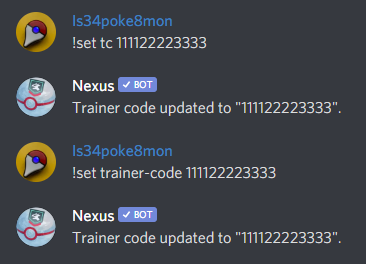

Command Usage¶
Commands shown on this site are using the default prefix
!, please note server admin’s can change the prefix to best suit their community.Commands in
[ ]are showing aliases that perform the same task, and< >are used to show the desired input.Example message entry in Discord for
!set [tc|fc|trainer-code|friend-code] <trainer_code>would be!set tc 111122223333or!set trainer-code 111122223333.
Note
Arguments on commands are separated by a space. Generally, when an argument is the last argument on a command, even if you separate text by a space it will all default to that same argument. If you wish to insert text that have a space into a single argument, you can wrap the argument in quotes (“argument”). For instance, if you want to award the raid master badge to the user called test user, this will work: !award badge "test user" "raid master"